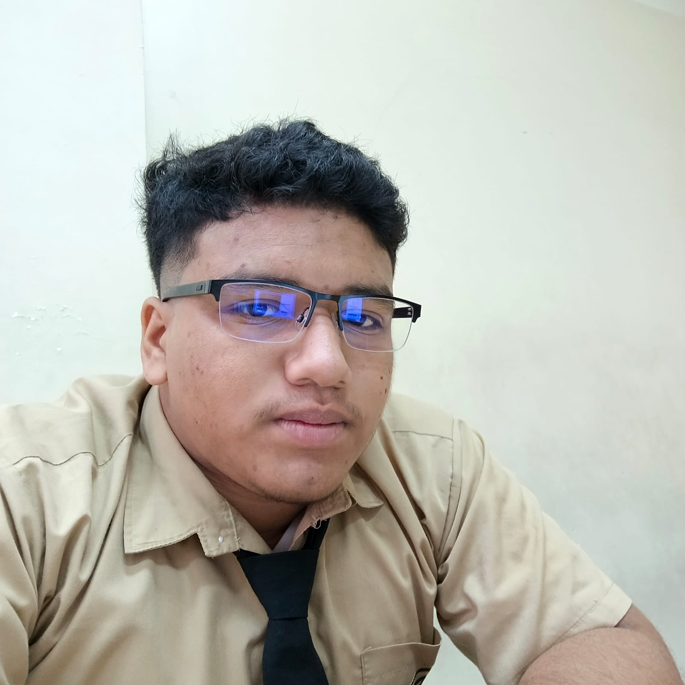

Tengo 17 años y el 23 de octubre de este año alcanzaré la mayoría de edad. Todo lo que sé lo he aprendido de forma autodidacta: investigando, viendo tutoriales, practicando y mejorando constantemente.
Me apasiona la programación y el diseño visual. Disfruto resolver problemas de forma rápida y eficiente, sin quedarme estancado. Siempre busco avanzar, aprender algo nuevo y mejorar mis habilidades.
He participado en procesos de formación y desarrollo de proyectos, donde he adquirido experiencia práctica:
Me gusta construir cosas desde cero: páginas web, sistemas y proyectos interactivos. No sigo un camino tradicional, aprendo haciendo y mejorando constantemente.
Además de la programación, también me interesa el diseño visual, cuidando que todo lo que haga se vea moderno, limpio y bien estructurado.
Me interesa el desarrollo web, el diseño y también el área de la nutrición y el rendimiento personal. Me gusta mejorar tanto en lo técnico como en lo personal.
Busco crecer en disciplina, conocimiento y habilidades, no solo como programador, sino como persona.
Seguir mejorando constantemente hasta convertirme en un desarrollador de alto nivel, creando proyectos sólidos, bien diseñados y con impacto real.